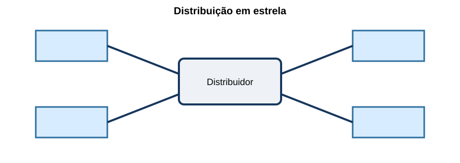
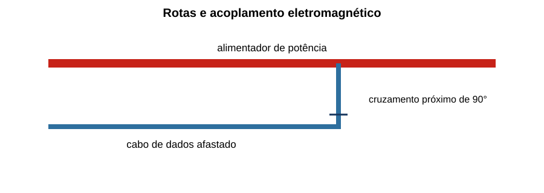
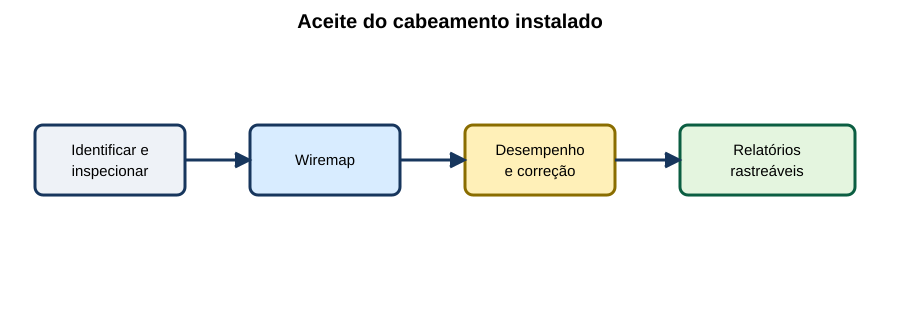

Redes Estruturadas & Cabeamento
15 questões autorais calibradas pelo padrão IDECAN • Bloco Bronze
| Questão 01 | Topologia de Cabeamento • Estrela Hierárquica |
A planta prevê que tomadas de telecomunicações de dois pavimentos sejam ligadas em série, passando de sala em sala, para economizar cabos.

Em cabeamento estruturado, a revisão mais coerente é:A) manter a ligação serial, pois falhas intermediárias não afetam pontos posteriores.
B) substituir todos os cabos horizontais por um único coaxial compartilhado.
C) adotar distribuição em estrela a partir dos distribuidores adequados, preservando administração e independência dos enlaces.
D) ligar cada tomada diretamente à operadora, eliminando distribuidores do edifício.
Gabarito Comentado: Alternativa C
A estrela hierárquica cria enlaces administráveis e limita o efeito de uma falha física. Encadear tomadas mistura cabeamento permanente e conexão de equipamentos, dificultando certificação, mudanças e isolamento de defeitos.
Análise das armadilhas:Confundir economia inicial de cabo com arquitetura estruturada e manutenível.Como pensar nesta questão:Siga cada tomada até seu distribuidor: o enlace deve ser identificável e independente.
| Questão 02 | Enlace Permanente e Canal • Certificação |
Um enlace permanente foi aprovado, mas o canal falha após a instalação de patch cords longos e de baixa qualidade. Isso é possível porque:
A) o canal inclui conexões e cordões que não fazem parte do ensaio do enlace permanente.
B) a certificação permanente mede somente continuidade do condutor de proteção.
C) patch cords melhoram necessariamente todos os parâmetros ao aumentar o comprimento.
D) o equipamento ativo altera retroativamente a categoria do cabo instalado.
Gabarito Comentado: Alternativa A
O canal considera o enlace fixo mais cordões e conexões do uso final. Componentes adicionais introduzem atenuação, reflexão e diafonia; por isso, aprovação do permanente não garante qualquer montagem de canal.
Análise das armadilhas:Tratar os dois limites de teste como sinônimos ou acreditar que cordão não participa do desempenho.Como pensar nesta questão:Desenhe a fronteira exata do ensaio e marque quais componentes ficaram fora dela.
| Questão 03 | Mapa de Fios • Diagnóstico |
O certificador mostra os pares 1–2 e 3–6 com continuidade, mas os condutores 3 e 6 aparecem trocados apenas em uma extremidade. O resultado indica:
A) atenuação óptica excessiva.
B) curto entre todos os pares.
C) enlace aprovado, pois ambos os condutores pertencem ao mesmo cabo.
D) erro de wiremap na terminação, a corrigir antes dos testes de desempenho.
Gabarito Comentado: Alternativa D
O mapa de fios verifica correspondência pino a pino, aberturas, curtos, inversões e pares divididos. Uma troca na terminação é falha física, mesmo que exista continuidade elétrica.
Análise das armadilhas:Confundir presença de continuidade com pinagem correta ou avançar para testes sofisticados sem corrigir o básico.Como pensar nesta questão:Comece pelo wiremap; só interprete diafonia e atenuação depois que a geometria dos pares estiver correta.
| Questão 04 | Diafonia • NEXT |
Em um enlace de pares balanceados, o NEXT medido piora muito após o instalador destrançar vários centímetros junto ao conector. A relação técnica mais provável é:
A) o destrançamento reduz a resistência CC sem afetar acoplamento.
B) a perda da geometria dos pares aumenta o acoplamento indesejado próximo à extremidade de transmissão.
C) o NEXT mede exclusivamente reflexão causada por diferença de impedância.
D) o defeito só pode estar no switch, nunca na terminação passiva.
Gabarito Comentado: Alternativa B
A torção e o balanceamento reduzem acoplamento entre pares. Desfazer excessivamente as tranças junto à terminação degrada NEXT. Return loss é o parâmetro mais diretamente ligado às reflexões por descontinuidade de impedância.
Análise das armadilhas:Trocar diafonia por reflexão ou atribuir toda falha de certificação ao equipamento ativo.Como pensar nesta questão:Associe cada medição ao fenômeno: NEXT é energia acoplada entre pares no lado próximo.
| Questão 05 | Fibra Óptica • Orçamento de Potência |
Um enlace tem transmissor de 0 dBm, receptor com sensibilidade de −12 dBm, perdas de fibra de 3,2 dB, conectores de 1,5 dB e emendas de 0,8 dB. A margem óptica é:
A) 11,2 dB.
B) 17,5 dB.
C) 6,5 dB.
D) 5,5 dB.
Gabarito Comentado: Alternativa C
O orçamento disponível é $0-(-12)=12\,dB$. As perdas somam $3{,}2+1{,}5+0{,}8=5{,}5\,dB$. A margem é $12-5{,}5=6{,}5\,dB$.
Análise das armadilhas:Somar sensibilidade como número negativo às perdas ou confundir perda total com margem.Como pensar nesta questão:Calcule primeiro potência disponível entre transmissor e limite do receptor; depois subtraia todas as perdas.
| Questão 06 | Fibra Multimodo e Monomodo • Seleção |
Para um backbone longo entre edifícios, com necessidade de alta capacidade e possibilidade de expansão, a avaliação deve favorecer:
A) fibra multimodo apenas porque possui núcleo maior, independentemente de distância e transceptores.
B) cabo metálico externo sem proteção, pois Ethernet balanceada não possui limite de alcance.
C) qualquer fibra, pois dispersão e orçamento óptico não dependem do tipo.
D) fibra monomodo quando compatível com alcance, transceptores e orçamento, avaliando infraestrutura e proteção do enlace.
Gabarito Comentado: Alternativa D
Fibra monomodo oferece alcance e largura de banda adequados a longas distâncias, mas a escolha deve incluir transceptores, conectores, orçamento, ambiente e custo total. Núcleo maior não significa maior alcance.
Análise das armadilhas:Escolher apenas pelo diâmetro do núcleo ou declarar equivalência universal entre fibras.Como pensar nesta questão:Comece por distância e aplicação; depois verifique meio, óptica e orçamento de potência.
| Questão 07 | PoE • Orçamento do Switch |
Um switch PoE dispõe de orçamento total de 370 W. Serão conectados 20 dispositivos que demandam até 18 W na entrada de cada porta. Desprezando reserva adicional, o orçamento:
A) é suficiente, com 10 W remanescentes.
B) é insuficiente por 10 W.
C) é suficiente, com 190 W remanescentes.
D) é insuficiente por 360 W.
Gabarito Comentado: Alternativa A
A demanda é $20\cdot18=360\,W$. Restam $370-360=10\,W$. O projeto real ainda verifica potência por porta, classe, perdas, simultaneidade e margem operacional.
Análise das armadilhas:Comparar somente potência máxima de uma porta ou confundir orçamento total com consumo de um único dispositivo.Como pensar nesta questão:Faça duas verificações: limite individual por porta e soma de todas as cargas simultâneas.
| Questão 08 | PoE • Aquecimento de Feixes |
Muitos cabos alimentando dispositivos PoE foram agrupados em feixe denso sobre forro quente. A preocupação técnica é:
A) a alimentação elimina a necessidade de respeitar categoria e comprimento do canal.
B) PoE transmite potência apenas pela blindagem, sem aquecer os pares.
C) a corrente nos condutores pode elevar a temperatura, aumentando perdas e exigindo avaliação de agrupamento e ambiente.
D) o aquecimento melhora a atenuação ao reduzir a resistência do cobre.
Gabarito Comentado: Alternativa C
Corrente nos pares gera perdas $I^2R$; agrupamento e temperatura ambiente dificultam dissipação e aumentam resistência. Projeto e instalação devem considerar capacidade do cabo, conectores, feixe e potência aplicada.
Análise das armadilhas:Tratar baixa tensão como ausência de efeito térmico ou supor que cobre reduz resistência ao aquecer.Como pensar nesta questão:Siga a corrente por cada condutor e avalie geração e dissipação de calor no pior feixe.
| Questão 09 | Interferência Eletromagnética • Rotas |
Um cabo de dados percorre longo trecho paralelo a alimentadores de motores e cruza um deles no final.

Para reduzir acoplamento, é preferível:A) aproximar ainda mais as rotas para que os campos se cancelem.
B) manter segregação e realizar cruzamentos inevitáveis aproximadamente de forma perpendicular.
C) retirar a torção dos pares no trecho paralelo para reduzir indutância.
D) ligar condutores de dados diretamente ao PE em ambas as extremidades.
Gabarito Comentado: Alternativa B
A separação reduz acoplamento em trechos paralelos; cruzamento próximo de 90° diminui o comprimento de interação. Blindagem, equipotencialização e rota devem seguir o sistema adotado, sem aterrar condutores de sinal improvisadamente.
Análise das armadilhas:Transformar uma boa prática de cruzamento em autorização para longos paralelismos ou modificar os pares.Como pensar nesta questão:Minimize proximidade e extensão paralela; trate cruzamentos e blindagem como partes do mesmo projeto EMC.
| Questão 10 | Blindagem • Continuidade |
Um canal blindado usa cabo F/UTP, mas patch panel plástico sem conexão da blindagem e patch cords UTP. O resultado é:
A) blindagem contínua garantida pelo trançamento dos pares.
B) proteção superior à de qualquer canal totalmente blindado.
C) conversão automática do canal para fibra óptica.
D) blindagem descontínua, exigindo revisão das terminações e da equipotencialização.
Gabarito Comentado: Alternativa D
O desempenho de blindagem depende da continuidade do canal e de conexões adequadas. Misturar componentes não blindados interrompe o caminho previsto e pode tornar a proteção ineficaz.
Análise das armadilhas:Achar que a sigla do cabo define sozinha o desempenho de todo o canal.Como pensar nesta questão:Percorra a blindagem de ponta a ponta e identifique onde ela termina, conecta e referencia potencial.
| Questão 11 | Infraestrutura • Ocupação e Reserva |
Uma eletrocalha está quase totalmente ocupada após a primeira fase do edifício, embora haja expansão prevista. A decisão adequada é:
A) dimensionar caminhos considerando ocupação admissível, suporte, curvatura, manutenção e reserva de crescimento.
B) reduzir o diâmetro externo dos cabos por compressão mecânica.
C) ignorar peso e raio de curvatura porque a ocupação é apenas geométrica.
D) preencher todo espaço disponível agora e apoiar novos cabos sobre o forro.
Gabarito Comentado: Alternativa A
Caminhos precisam suportar cabos atuais e futuros sem comprometer instalação, raio, peso ou acesso. Reserva não é espaço sem critério: deve permanecer utilizável e documentada.
Análise das armadilhas:Otimizar apenas área inicial ou tratar forro como suporte e caminho de cabos.Como pensar nesta questão:Avalie seção, carga, curvaturas, acesso e crescimento ao longo de toda a rota.
| Questão 12 | Rack • Organização e Fluxo de Ar |
Em rack com switches, patch panels, organizadores e UPS, a distribuição deve:
A) instalar equipamentos pesados no topo e bloquear entradas de ar para ocultar cabos.
B) considerar peso, ventilação, acesso, raios, energia, segregação e facilidade de manobra dos cordões.
C) misturar alimentação e fibras sem organização, pois o gabinete fornece blindagem total.
D) usar patch cords no menor comprimento físico possível, mesmo sob tração ou dobra acentuada.
Gabarito Comentado: Alternativa B
Organização deve preservar segurança mecânica, refrigeração, acesso e desempenho dos cabos. Equipamentos pesados geralmente exigem posição e fixação adequadas; cordões precisam de folga e raio, sem criar massas que obstruam ventilação.
Análise das armadilhas:Confundir aparência compacta com boa manutenção ou impor cordões esticados para reduzir comprimento.Como pensar nesta questão:Simule instalação, operação e troca de cada componente sem interromper ou danificar os vizinhos.
| Questão 13 | Identificação • Rastreabilidade |
Durante uma falha, as duas pontas do enlace têm etiquetas diferentes e a planta não acompanha a última mudança. A correção de gestão é:
A) renumerar apenas a tomada e manter o patch panel como está.
B) substituir etiquetas por cores sem código, pois cores são universais.
C) usar identificação única e consistente em tomadas, portas, cabos, caminhos e documentação atualizada.
D) depender da memória do técnico que executou a alteração.
Gabarito Comentado: Alternativa C
Administração consistente liga elemento físico, localização, porta e registro. Mudanças devem atualizar documentação; identificadores conflitantes aumentam tempo de reparo e risco de desconectar serviço errado.
Análise das armadilhas:Tratar etiquetagem como acabamento ou usar cor sem esquema documentado.Como pensar nesta questão:Escolha um enlace e confirme se o mesmo identificador o acompanha do campo ao registro.
| Questão 14 | Backbone • Capacidade Agregada |
Quatro switches de acesso podem gerar simultaneamente 2,5 Gb/s cada para o switch central. Um único uplink de 10 Gb/s possui, em termos nominais:
A) oversubscription de 4:1.
B) capacidade de apenas 2,5 Gb/s.
C) folga garantida de 7,5 Gb/s mesmo quando os quatro acessos estão no máximo.
D) capacidade nominal igual à soma de 10 Gb/s, antes das margens de projeto.
Gabarito Comentado: Alternativa D
A soma nominal é $4\cdot2{,}5=10\,Gb/s$, igual ao uplink. Isso não assegura ausência de congestionamento, pois overhead, bidirecionalidade, rajadas, falhas e arquitetura precisam ser avaliados.
Análise das armadilhas:Somar velocidades e declarar folga inexistente ou chamar igualdade nominal de oversubscription.Como pensar nesta questão:Compare demanda agregada e capacidade na mesma direção e depois aplique margens e cenários de falha.
| Questão 15 | Certificação • Aceite Final |
A figura mostra o fluxo de aceite do cabeamento.

A sequência mais robusta é:A) inspecionar, verificar wiremap, medir desempenho, corrigir falhas e emitir relatórios identificados.
B) ativar a rede, ocultar falhas e certificar apenas os pontos reclamados.
C) emitir relatório genérico antes da instalação e usá-lo para todos os enlaces.
D) testar somente conectividade IP, que substitui certificação da camada física.
Gabarito Comentado: Alternativa A
Aceite começa pela inspeção e identificação, corrige erros físicos básicos e aplica o limite correspondente ao enlace ou canal. Resultados devem ser rastreáveis ao ponto instalado; conectividade momentânea não comprova margem de desempenho.
Análise das armadilhas:Confundir teste funcional do serviço com certificação do cabeamento ou aceitar relatórios sem vínculo com o campo.Como pensar nesta questão:Siga a cadeia: identificar → inspecionar → medir → corrigir → repetir → documentar.